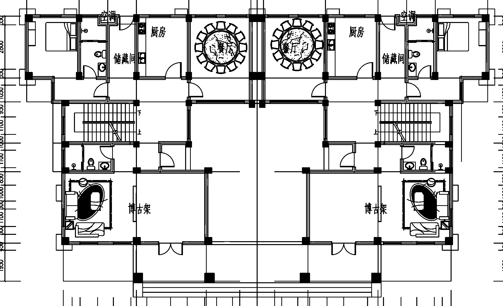
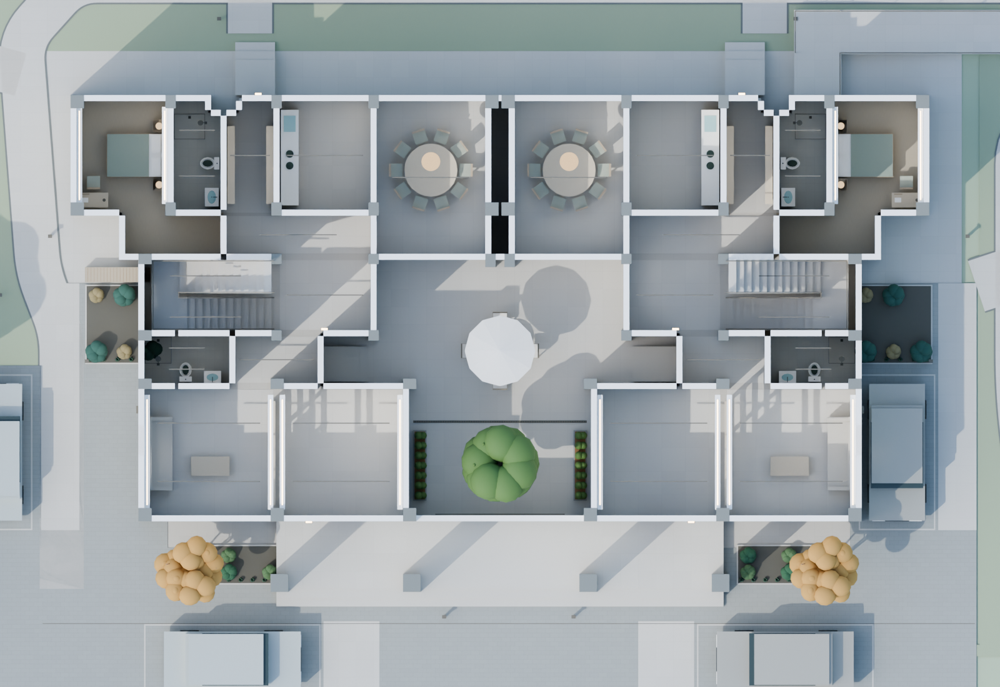
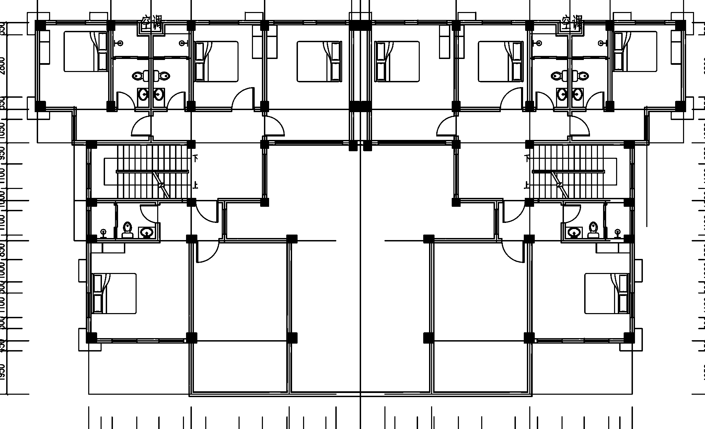
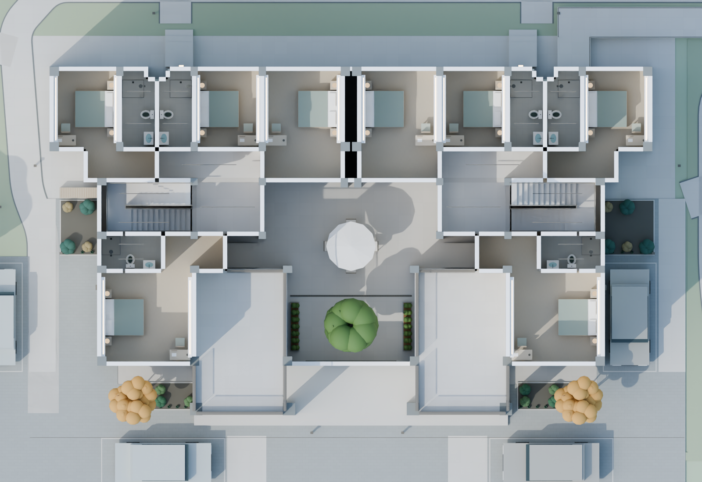
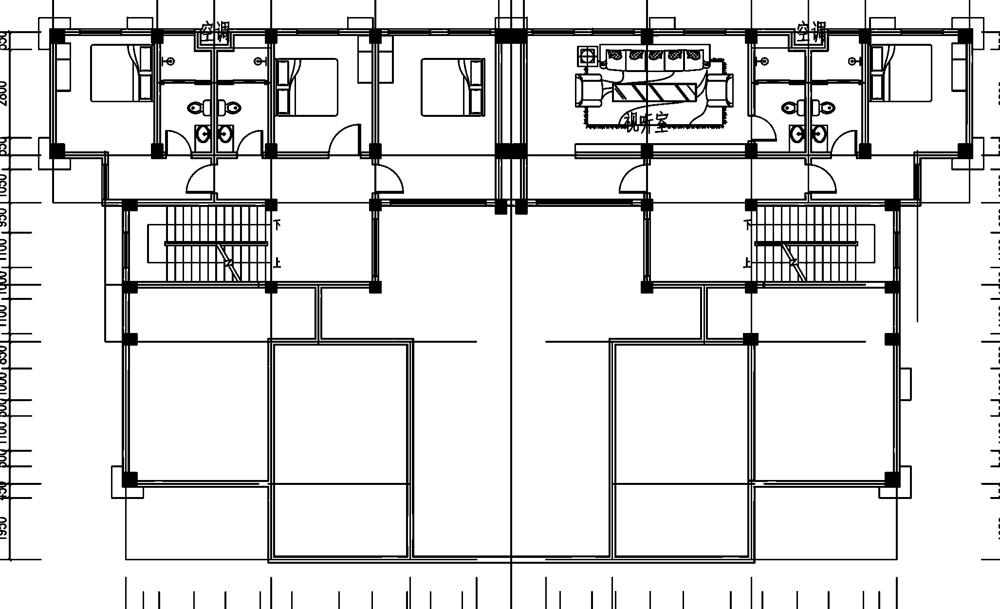

29.00×16.70米 · 14卧室 · 14卫浴 · 每室1张床。三层无阳台。门窗位置与宽度按PDF矢量核对；图中未标的高度、屋面、家具及材质为展示值。





保留北侧空调凹位、中央0.80米墙轴间距、套内通道和影音屏墙。天井低450毫米，三级台阶。按户主最新要求取消二层南端连桥，恢复两户独立露台的临空栏杆；取消露台上四根凸柱，一层前廊柱保留。新图两餐厅保持分开，各10席，未擅自改联通大厅。